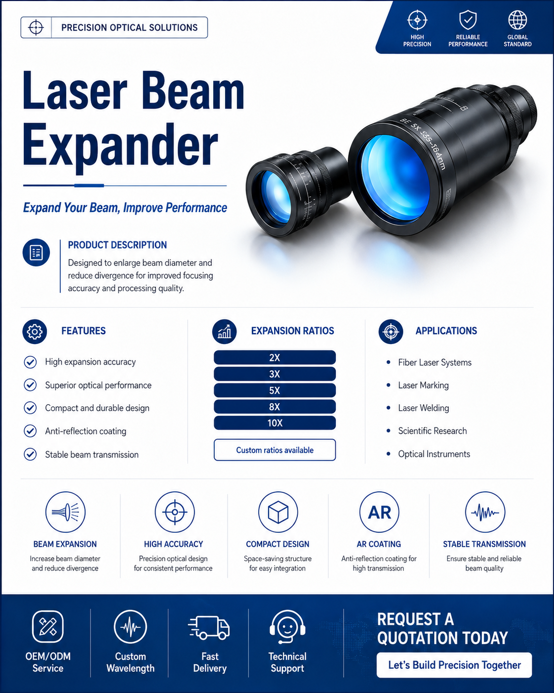

Designed to enlarge laser beam diameter while reducing beam divergence, improving focusing accuracy and processing quality.

Laser Beam Expanders are designed to enlarge laser beam diameter while reducing beam divergence, improving focusing accuracy and processing quality. They are ideal for laser marking, engraving, welding, and scientific applications.
Customized wavelength and expansion ratios available. Request a quotation today.
Custom wavelength, expansion ratio and mounting structure can be supported.